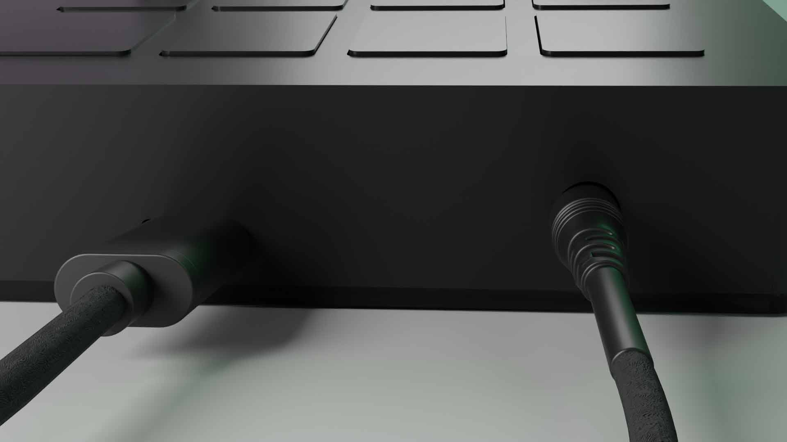
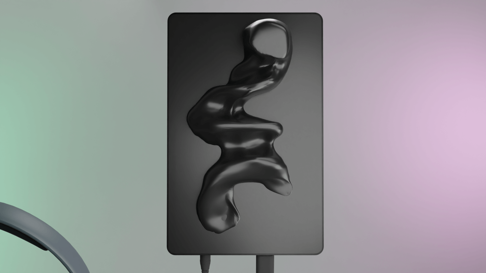
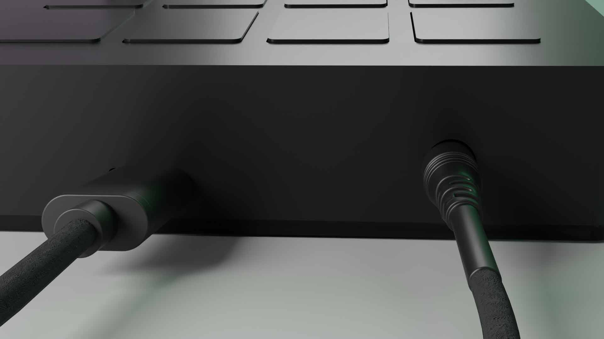
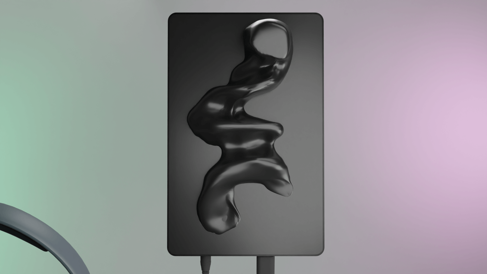
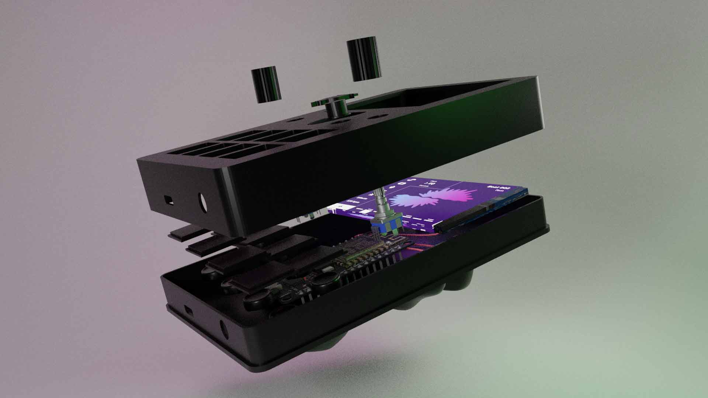
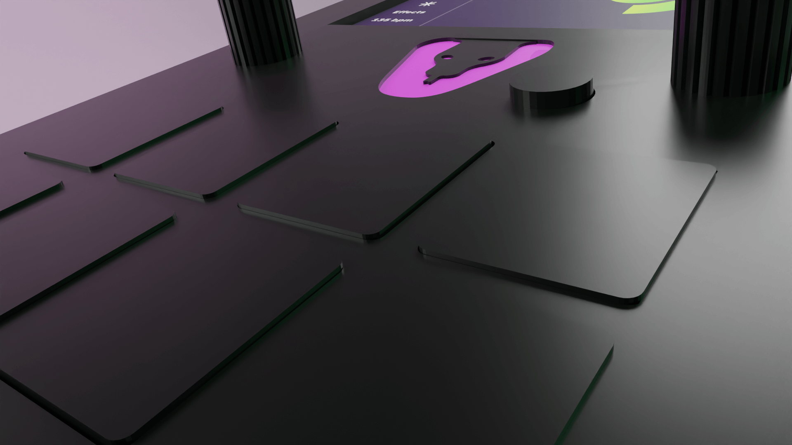
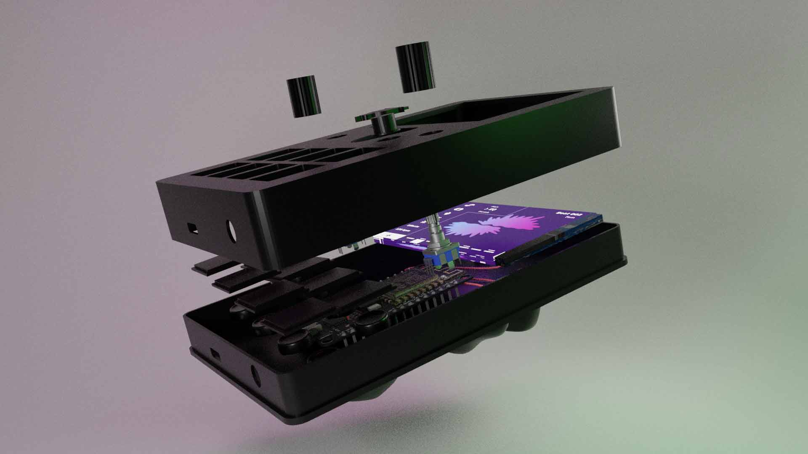
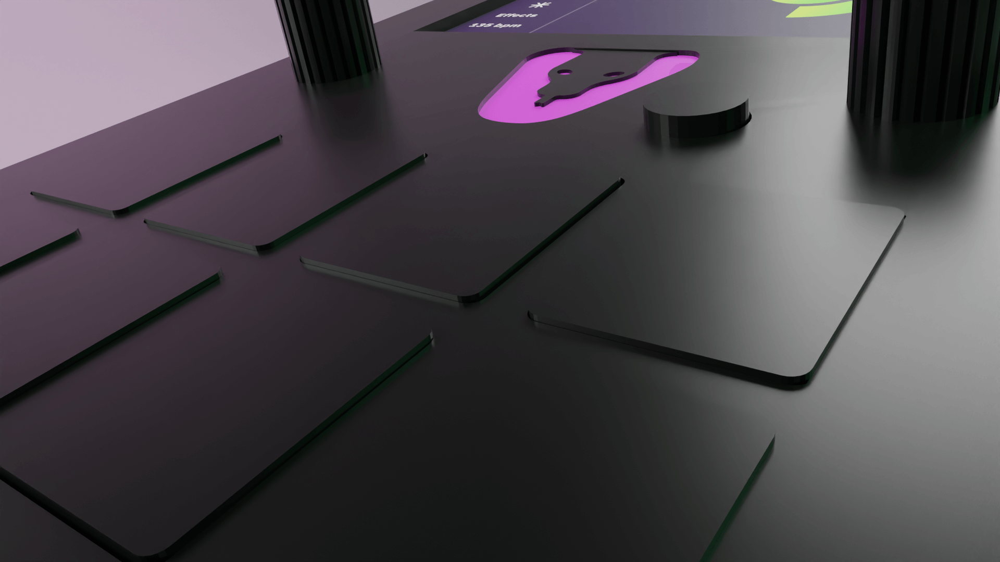

Über den Service
Konzept
SofaSoGood ist ein nachhaltiger Möbel-Mietservice, der sich speziell an Studierende und internationale Austauschstudierende richtet. Ziel ist es, den Einzug in eine temporäre Wohnung so einfach und kostengünstig wie möglich zu gestalten – ohne die Belastung durch hohe Anschaffungskosten oder den Aufwand des Wiederverkaufs.
Das Angebot umfasst flexibel kombinierbare Starterpakete mit Möbeln, Textilien und Alltagsgegenständen, die je nach Bedarf ausgewählt oder ausgetauscht werden können. Die Pakete sind so konzipiert, dass sie die wichtigsten Grundbedürfnisse abdecken und gleichzeitig nachhaltig bleiben: Alle Möbelstücke werden nach der Nutzung gereinigt, aufbereitet und erneut vermietet.
Mit SofaSoGood entsteht eine Lösung, die Zeit spart, Umzüge erleichtert und gleichzeitig Ressourcen schont – ein smarter Ansatz für modernes, temporäres Wohnen.

Preise
Die Preisstruktur von SofsSoGood basiert auf einer transparenten Kalkulation. Ausgangspunkt sind die Anschaffungskosten der Möbel, die auf die erwartete Lebensdauer umgerechnet werden. Hinzu kommen Faktoren wie Reinigung, Logistik, Lagerung sowie eine Gewinnmarge.
Auf diese Weise entstehen realistische Mietpreise, die sowohl für Studierende erschwinglich bleiben als auch die nachhaltige Wiederverwendung der Möbel ermöglichen. Zusätzlich gibt es zwei Preisstufen: eine für Mietzeiträume bis zu 6 Monaten und eine günstigere für längere Zeiträume.
Die gesammte Preisliste
Zielgruppe
Ort: Berlin und Umkreis
Hörvermögen: Gehörlos seit der Geburt
Beruf: Designstudent, aktives Mitglied der lokalen Gehörlosengemeinschaft
Bevorzugte Sprache:Deutsche Gebärdensprache, schreiben von Nachrichten
Technische Affinität:Hoch – sie hat Spaß daran, Apps, Videobearbeitungsprogramme und jede Technologie zu erkunden, die eine gute Barrierefreiheit bietet.
Leila
Kreativer Musikliebhaber mit Gehörlosigkeit
Verbindung zur Musik
Leila liebt Tanz und Bewegung; auf einer pulsierenden Clubfläche oder zu Hause über einen Vibrationslautsprecher spürt sie die Basslinien mit ihrem ganzen Körper. Musikvideos faszinieren sie, wenn Untertitel und eindrucksvolle Bilder den Rhythmus unterstreichen, doch traditionelle Musikinstrumente frustrieren sie – die meisten sind auf das Gehör angewiesen. Sie sehnt sich nach einer Möglichkeit, Beats zu kreieren, die sie fühlen und sehen kann, anstatt sie zu hören.
Wünsche und Ziele
Leilas größter Wunsch ist es, sich musikalisch nach ihren eigenen Vorstellungen auszudrücken. Sie möchte Rhythmen durch Berührung und Sehen gestalten, spontan mit ihren hörenden Freunden jammen und ihre Kreationen in den sozialen Medien teilen. Das visuelle Erkunden von Mustern, das Erfühlen durch Vibrationen und das Feinabstimmen ohne sich auf Geräusche zu verlassen, würde ihr ein neues kreatives Ventil und ein Gefühl der Eigenverantwortung für Musik geben.
Probleme
Die meisten Musikprogramme gehen davon aus, dass man hören kann: Die Benutzeroberflächen sind voll mit Reglern und Wellenformen, die keine taktile Bedeutung haben, und Notenschrift ist für sie etwas Fremdes. In Workshops werden selten barrierefreie Hilfsmittel angeboten, sodass sie außen vor bleibt. Diese Barrieren führen dazu, dass sie sich ausgeschlossen fühlt, wenn Freunde über das Musizieren sprechen, und verstärken den Eindruck, dass echtes Musizieren „nur etwas für hörende Menschen“ ist.
Styleguide
Logo
Zuerst haben wir uns einen Namen überlegt, um unsere Corporate Identity zu entwickeln. Bis dahin hatten wir immer "Sonic Sense" als Arbeitstitel verwendet, aber dann haben wir uns Gedanken gemacht. Nach einigem Hin und Her haben wir uns schließlich für "Vibra" entschieden. Das Wort kommt von "Vibration", erinnert aber auch an "Kobra". Die Kobra, oder Schlange, ist auch in unserem Logo zu sehen. Schlangen haben, im Gegensatz zu Säugetieren, keine äußeren Ohrmuscheln oder Trommelfelle. Sie nehmen also keine Schallwellen in der Luft so wahr, wie wir das kennen. Sie haben aber ein Innenohr, das mit dem Kieferknochen verbunden ist, vor allem mit dem Quadratum. Dieser Knochen nimmt Vibrationen, die vom Boden oder der Umgebung kommen, direkt auf und leitet sie an das Innenohr weiter. Wir fanden, dass das eine echt passende Metapher ist.
Farben
primary color + kick
#FF3172
snare
#6EEBCB
hat
#5583E7
tom
#FAC2FF
clap
#FF955C
Background color
#1D0739
Schriften

Font-Family: IBM Plex Sans
Ein Klassiker unter den Screen Fonts. Wir haben viele Schriften durchgetestet, vorallem auch in kleinen Größen, da unser Screen einfach sehr klein ist. Daher braucten wir eine so klare Schrift wie die IBM Plex.
Unsere Logoschrift ist die Bagel Fat One. Im Screendesign wird sie gar nicht verwendet, ausschließlich für die Logovarianten. Sie ist noch ein Überbleibsel aus der 8-Bit Designidee, funktioniert aber dennoch im neuen und jetzigen Design, da sie die sonst sehr kleren Linien aufbricht.

Font-Family: Bagel Fat One


 



 


